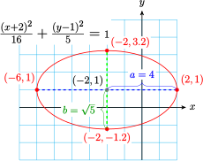
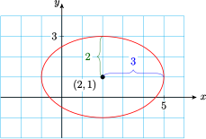
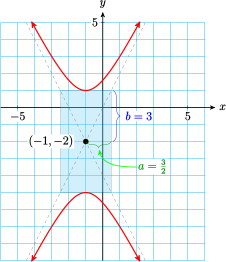
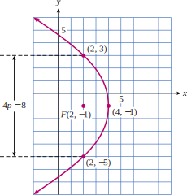

Section 10.4 Translated Conics
In this section we consider ellipses and hyperbolas that are not centered at the origin, and parabolas whose vertices are not at the origin. These figures are translations of the central conics.
Subsection Ellipses
We used the distance formula to derive the equation of a circle centered at the point \((h,k)\text{.}\) The standard form for this equation is
The standard form for the equation of an ellipse centered at any point \((h,k)\) can also be derived from the distance formula.
Ellipse.
The standard equation for an ellipse centered at \((h,k)\) is
The horizontal axis of the ellipse has length \(2a\text{,}\) and the vertical axis has length \(2b\text{.}\) When \(a \gt b\text{,}\) the major axis is horizontal and the ellipse is short and wide. When \(a \lt b\text{,}\) the major axis is vertical and the ellipse is tall and narrow.

Example 10.37.
- Graph \(~~\dfrac{(x+2)^2}{16} + \dfrac{(y-1)^2}{5} = 1\)
- Find the exact coordinates of the intercepts of the graph.
-
The graph is an ellipse with center at \((-2,1)\text{.}\) We have \(a^2=16\) and \(b^2=5\text{,}\) and the major axis is parallel to the \(x\)-axis because \(a \gt b\text{.}\) The vertices lie four units to the left and right of the center, at \((-6,1)\) and \((2,1)\text{.}\) The covertices lie \(\sqrt{5}\) units above and below the center, at approximately \((-2, 3.2)\) and \((-2, -1.2)\text{.}\) The graph is shown below.
 -
We set \(y=\alert{0}\) and solve the resulting equation to find the \(x\)-intercepts.
\begin{align*} \dfrac{(x+2)^2}{16} + \dfrac{(\alert{0}-1)^2}{5} \amp = 1 \amp\amp \blert{\text{Subtract}~ \dfrac{1}{5}~ \text{from both sides.}}\\ \dfrac{(x+2)^2}{16} \amp = \dfrac{4}{5} \amp\amp \blert{\text{Multiply both sides by 16.}}\\ (x+2)^2 \amp = \dfrac{64}{5} \amp\amp \blert{\text{Extract roots.}}\\ x+2 \amp = \pm \sqrt{\dfrac{64}{5}}\\ x \amp = -2 \pm \dfrac{8\sqrt{5}}{5} \end{align*}The \(x\)-intercepts are \(\left(-2 \pm \dfrac{8\sqrt{5}}{5}, 0\right)\) or approximately \((1.6,0)\) and \((-5.6,0)\text{.}\) We set \(x=\alert{0}\) to find the \(y\)-intercepts.
\begin{align*} \dfrac{(\alert{0}+2)^2}{16} + \dfrac{(y-1)^2}{5} \amp = 1 \amp\amp \blert{\text{Subtract}~ \dfrac{1}{4}~ \text{from both sides.}}\\ \dfrac{(y-1)^2}{5} \amp = \dfrac{3}{4} \amp\amp \blert{\text{Multiply both sides by 5.}}\\ (y-1)^2 \amp = \dfrac{15}{4} \amp\amp \blert{\text{Extract roots.}}\\ y-1 \amp = \pm \sqrt{\dfrac{15}{4}}\\ y \amp = 1 \pm \dfrac{\sqrt{15}}{2} \end{align*}The \(y\)-intercepts are \(\left(0, 1 \pm \dfrac{\sqrt{15}}{4}\right)\) or approximately \((0, 2.9)\) and \((0, -0.9)\)
Notebook 10.38. Practice 1.

Second-degree equations in which the coefficients of \(x^2\) and \(y^2\) have the same sign can be written in one of the standard forms for an ellipse by completing the square. As with circles, the equation can be graphed easily from the standard form. (You may want to review completing the square for circles.)
Example 10.39.
-
Write the equation in standard form.
\begin{gather*} 4x^2 + 9y^2 - 16x - 18y -11 = 0 \end{gather*} - Graph the equation.
- Find the coordinates of the intercepts.
-
We first prepare to complete the square in both \(x\) and \(y\text{.}\) Begin by factoring out the coefficients of \(x^2\) and \(y^2\text{.}\)
\begin{gather*} \alert{4}(x^2-4x \underline{\hphantom{0000}}) + \alert{9}(y^2 - 2y \underline{\hphantom{0000}}) = 11 \end{gather*}We complete the square in \(x\) by adding \(\alert{4}\) to \(x^2-4x\text{,}\) and adding \(4 \cdot \alert{4}\text{,}\) or \(\blert{16}\text{,}\) to the right side of the equation. We complete the square in \(y\) by adding \(\alert{1}\) to \(y^2-2y\text{,}\) and \(9 \cdot \alert{1}\text{,}\) or \(\blert{9}\text{,}\) to the right side.
\begin{gather*} 4(x^2-4x+\alert{4}) + 9(y^2 - 2y + \alert{1}) = 11 + \blert{16} + \blert{9} \end{gather*}We write each term on the left side as a perfect square to get
\begin{align*} 4(x-2)^2 + 9(y-1)^2 \amp= 36 \amp\amp \blert{\text{Divide both sides by 36.}} \\ \frac{(x-2)^2}{9} + \frac{(y-1)^2}{4} \amp= 1 \end{align*} -
The graph is an ellipse with center at \((2, 1),~a^2=9\text{,}\) and \(b^2=4\) The vertices lie 3 units to the right and left of the center at \((5,1)\) and \((-1,1)\text{;}\) the covertices lie 2 units above and below the center at \((2,3)\) and \((2,-1)\text{.}\) The graph is shown below.
 -
To find the \(x\)-intercepts, we substitute \(y=\alert{0}\) into the original equation to obtain
\begin{align*} 4x^2 + 9(\alert{0})^2 - 16x - 18 (\alert{0}) - 11 \amp = 0\\ 4x^2 - 16x - 11 \amp = 0 \end{align*}We use the quadratic formula to solve for \(x\text{.}\)
\begin{gather*} x = \dfrac{16 \pm \sqrt{432}}{8} = 2 \pm \dfrac{3\sqrt{3}}{2} \end{gather*}The \(x\)-intercepts are \(\left( 2 \pm \dfrac{3\sqrt{3}}{2}, 0\right)\text{,}\) or approximately \((4.6,0)\) and \((-0.6,0)\text{.}\) To find the \(y\)-intercepts, we substitute \(x=\alert{0}\) into the given equation to obtain
\begin{align*} 4(\alert{0})^2 + 9y^2 - 16(\alert{0}) - 18y - 11 \amp = 0\\ 9y^2 - 18y - 11 \amp = 0 \end{align*}We use the quadratic formula to solve for \(y\text{.}\)
\begin{gather*} y = \dfrac{18 \pm \sqrt{720}}{18} = 1 \pm \dfrac{2\sqrt{5}}{3} \end{gather*}The \(y\)-intercepts are \(\left(0, 1 \pm \dfrac{2\sqrt{5}}{3}\right)\text{,}\) or approximately \((0, 2.5)\) and \((0,-0.5)\text{.}\)
Notebook 10.40. Practice 2.

Subsection Finding the Equation of an Ellipse
To write the equation of an ellipse from a description of its properties, we must find the center of the ellipse and the lengths of its axes. We can then substitute this information into the standard form.
Example 10.41.
Find the equation of the ellipse with vertices at \((3,3)\) and \((3,-5)\) and covertices at \((1,-1)\) and \((5,-1)\text{.}\)
You may find it helpful to plot the given points to help you visualize the ellipse. The center of the ellipse is the midpoint of the major (or minor) axis.

Thus, the center is the point \((3, -1)\text{.}\) The horizontal axis is shorter, and \(a\) is the distance between the center and either covertex, say \((5, −1)\) Thus,
The value of \(b\) is the distance from the center to one of the vertices, say \((3,3)\text{:}\)
The equation of the ellipse has the form
The equation of the ellipse has \(h=3\text{,}\) \(k=-1\text{,}\) \(a=2\text{,}\) \(b=4\text{.}\) Thus the equation is
If we clear this equation of fractions and expand the powers, we obtain the general form
Notebook 10.42. Practice 3.
Subsection Hyperbolas
The following standard forms for equations of hyperbolas centered at the point can be derived using the distance formula and the definition of hyperbola.
Hyperbola.
The standard equations for a hyperbola centered at \((h,k)\) are
The first equation describes a hyperbola whose transverse axis is parallel to the \(x\)-axis, so that the branches open left and right, and the second equation describes a hyperbola whose transverse axis is parallel to the \(y\)-axis, so that the branches open up and down, as shown below.

Example 10.43.
- Graph \(\dfrac{(x-3)^2}{8} - \dfrac{(y+2)^2}{10} = 1\)
- Find the equations of the asymptotes.
-
The graph is a hyperbola with
\begin{gather*} (h,k) = (3,-2),\quad a = \sqrt{8} = 2\sqrt{2},\quad \text{ and } b=\sqrt{10} \end{gather*}Because the \(x^2\)-term is positive, the branches open left and right. The coordinates of the vertices are thus \((3+2\sqrt{2},-2)\) and \((3-2\sqrt{2},-2)\text{,}\) or approximately \((5.8,-2)\) and \((0.2,-2)\text{.}\) The ends of the conjugate axis are \((3,-2+\sqrt{10}\)) and \((3,-2-\sqrt{10}\)), or approximately \((3,1.2)\) and \((3,-5.2)\text{.}\)

The central rectangle is centered at the point \((3,-2)\) and extends to the vertices in the horizontal direction and to the ends of the conjugate axis in the vertical direction. We draw the asymptotes through the opposite corners of the central rectangle, and sketch the hyperbola through the vertices and approaching the asymptotes to obtain the graph shown below.
-
Both asymptotes pass through the center of the hyperbola, \((3,-2)\text{.}\) Their slopes are
\begin{gather*} \frac{\sqrt{10}}{\sqrt{8}} = \frac{\sqrt{5}}{2}\quad \text{ and } \dfrac{-\sqrt{5}}{2} \end{gather*}We substitute these values into the point-slope formula to find the equations
\begin{gather*} y + 2 = \frac{\sqrt{5}}{2}(x-3)\quad \text{ and } \quad y + 2 = \frac{-\sqrt{5}}{2}(x-3) \end{gather*}
Notebook 10.44. Practice 4.
Quadratic equations in which the \(x^2\) term and the \(y^2\) term have opposite signs describe hyperbolas. We can write such equations in one of the standard forms by completing the squares in \(x\) and \(y\text{.}\)
Example 10.45.
- Write the equation in standard form.\begin{equation*} y^2-4x^2+4y-8x-9=0 \end{equation*}
- Graph the equation.
-
We prepare to complete the square by factoring out \(-4\) from the \(x\)-terms.
\begin{gather*} (y^2+4y\hphantom{-} \underline{ \hphantom{0000}})-4(x^2+2x\hphantom{-}\underline{\hphantom{0000}})=9 \end{gather*}We complete the square in \(y\) by adding \(\alert{4}\) to each side of the equation. To complete the square in \(x\) we add 1 to \(x^2+2x\text{,}\) so we add \(-4\cdot \alert{1}\text{,}\) or \(\alert{-4}\) to the right side, to get
\begin{gather*} (y^2 + 4y + \alert{4}) - 4(x^2 + 2x + \alert{1}) = 9 + \alert{4}~\alert{- 4} \end{gather*}or
\begin{gather*} (y+2)^2 - 4(x+1)^2 = 9 \end{gather*}Finally, we divide each side by 9 to obtain the standard form
\begin{gather*} \frac{(y+2)^2}{9} - \frac{(x+1)^2}{\dfrac{9}{4}} = 1 \end{gather*} -
The graph is a hyperbola with center at \((-1,-2)\text{.}\) Because the \(y^2\)-term is positive, the transverse axis is parallel to the \(y\)-axis, and
\begin{gather*} b^2 = 9,\quad a^2 = \frac{9}{4} \end{gather*}Thus, \(b=3\) and \(a = \dfrac{3}{2}\text{,}\) and the vertices are \((-1,1)\) and \((-1,5)\text{.}\) The ends of the conjugate axis are \(\left(\dfrac{-5}{2}, -2\right)\) and \(\left(\dfrac{1}{2}, -2\right)\text{.}\)
The central rectangle is centered at \((-1,-2)\text{,}\) as shown in the figure. We draw the asymptotes through the corners of the rectangle, then sketch the hyperbola by starting at the vertices and approaching the asymptotes.
Notebook 10.46. Practice 5.
Subsection Parabolas
The equation of a parabola whose vertex is located at the point \((h,k)\) can also be derived from the distance formula.
Parabola.
The standard equation for a parabola with vertex at \((h,k)\) has one of the following forms.
The constant \(a\) is equal to \(\dfrac{\pm1}{4p}\text{,}\) where \(p\) is the distance between the vertex and the focus of the parabola. It controls the width of the parabola; the smaller the absolute value of \(a\text{,}\) the wider the parabola.
Example 10.47.
Describe the graph of \(~y-3 = \dfrac{-1}{8}(x+2)^2\text{.}\)
The graph is a parabola the opens downward, because \(a \lt 0\text{.}\) The vertex of the parabola is the point \((-2,3)\text{.}\) Because \(\abs{a} = \dfrac{1}{8} \lt 1\text{,}\) the parabola is relatively wide.
.To improve our description, we can locate one or two points besides the vertex. For example, if \(x=\alert{2}\text{,}\) then
so \((2,1)\) lies on the graph. By symmetry, there is another point with the same \(y\)-coordinate at an equal distance from the axis of the parabola. This point is \((-6,1)\text{,}\) as shown below.
Notebook 10.48. Practice 6.
A quadratic equation that includes either an \(x^2\) term or a \(y^2\) term, but not both, can be put into one of the standard forms for a parabola by completing the square.
Example 10.49.
-
Write the equation in standard form.
\begin{gather*} y^2+2y+8x-31=0 \end{gather*} - Graph the equation.
-
First, we prepare to complete the square in \(y\) by writing
\begin{gather*} (y^2+2y \hphantom{0000}) = -8x+31 \end{gather*}We complete the square by adding \(\alert{1}\) to each side of the equation to get
\begin{gather*} (y^2+2y+1) = -8x+32 \end{gather*}or
\begin{gather*} (y+1)^2 = -8(x+4) \end{gather*} -
The graph is a parabola that opens to the left. Its vertex is the point \((4,-1)\text{.}\) To find another point on the graph, choose a value for \(y\text{,}\) say \(y=\alert{3}\text{.}\) Solving for \(x\) yields
\begin{align*} (\alert{3} + 1)^2 \amp = -8(x-4) \amp\amp \blert{\text{Divide both sides by }-8.}\\ \dfrac{16}{-8} \amp = x-4 \amp\amp \blert{\text{Add 4 to both sides.}}\\ 2 \amp = x \end{align*}Thus, \((2,3)\) lies on the graph. Because of symmetry, there is another point on the graph with the same \(x\)-coordinate and at an equal distance from the parabola's axis, which is the line \(y=-1\text{.}\) This point is \((2,-5)\text{,}\) as shown below.

Notebook 10.50. Practice 6.
Subsection General Quadratic Equation in Two Variables
The general quadratic equation in two variables has the form
We have considered the graphs of examples in which \(B=0\text{.}\) These graphs are conic sections whose axes are parallel to one or both of the coordinate axes. (If \(B \not= 0\text{,}\) the axes of the conic section are rotated with respect to the coordinate axes.)
The type of conic section depends upon the coefficients of the quadratic terms, \(A\) and \(C\text{.}\)
Graphs of Conic Sections.
The graph of \(~Ax^2 + Bxy + Cy^2 + Dx + Ey + F = 0~\) is
- a circle if \(A=C\text{.}\)
- a parabola if \(A=0\) or \(C=0\) (but not both).
- an ellipse if \(A \not= C\) and they have the same sign.
- a hyperbola if \(A\) and \(C\) have opposite signs.
The coefficients \(D,~E\text{,}\) and \(F\) do not affect the type of conic section the equation represents, but they do determine the position of the graph relative to the origin. Once we recognize the form of the graph, we can write the equation in the appropriate standard form to discover more information about the graph.
The graph can also be a point, a line, a pair of lines, or no graph at all, depending on the values of the coefficients \(A\) through \(F\text{.}\) These graphs are called degenerate conics. We'll see some examples of degenerate conics in the Homework Problems.
Example 10.51.
Name the graph of each equation, assuming that the graph is not degenerate.
- \(\displaystyle 3x^2+3y^2-2x+4y-6=0\)
- \(\displaystyle 4y^2+8x^2-3y=0\)
- \(\displaystyle 4x^2-6y^2+x-2y=0\)
- \(\displaystyle y+x^2-4x+1=0\)
- The graph is a circle because the coefficients of \(x^2\) and \(y^2\) are equal.
- The graph is an ellipse because the coefficients of \(x^2\) and \(y^2\) are both positive.
- The graph is a hyperbola because the coefficients of \(x^2\) and \(y^2\) have opposite signs.
- The graph is a parabola because \(y\) is of first degree and \(x\) is of second degree.
Notebook 10.52. Practice 7.
Subsection Section Summary
Subsubsection Vocabulary
Look up the definitions of new terms in the Glossary.
- Translation
- Degenerate conic
Subsubsection CONCEPTS
- The standard equation for an ellipse centered at \((h,k)\) is\begin{equation*} \dfrac{(x-h)^2}{a^2} + \dfrac{(y-k)^2}{b^2} = 1 \end{equation*}
- Second-degree equations can be written in one of the standard forms by completing the square.
- To write the equation of an ellipse from a description of its properties, we must find the center of the ellipse and the lengths of its axes.
- The standard equations for a hyperbola centered \((h,k)\) at are\begin{equation*} \dfrac{(x-h)^2}{a^2} - \dfrac{(y-k)^2}{b^2} = 1~~\text{and}~~\dfrac{(y-k)^2}{b^2} - \dfrac{(x-h)^2}{a^2} = 1 \end{equation*}
- The standard equation for a parabola with vertex at has one of the following forms.\begin{equation*} y-k=a(x-h)^2~~~~~\text{opens upward if}~a \gt 0;~~\text{downward if}~a \lt 0 \end{equation*}\begin{equation*} x-h=a(y-k)^2~~~~~\text{opens to the right if}~a \gt 0;~~\text{to the left if}~a \lt 0 \end{equation*}
- The constant \(a\) is equal to \(\dfrac{\pm1}{4p}\text{,}\) where \(p\) is the distance between the vertex and the focus of the parabola.
- The coefficients \(D, E,\) and \(F\) do not affect the type of conic section the equation represents, but they do determine the position of the graph relative to the origin.
- The graph of a second-degree equation in two variables is a conic section.
-
The graph of \(~Ax^2 + Bxy + Cy^2 + Dx + Ey + F = 0~\) is
- a circle if \(A=C\text{.}\)
- a parabola if \(A=0\) or \(C=0\) (but not both).
- an ellipse if \(A \not= C\) and they have the same sign.
- a hyperbola if \(A\) and \(C\) have opposite signs.
Subsubsection STUDY QUESTIONS
- What is a translated conic?
- How is the equation for a translated conic different from the equation for the corresponding central conic?
- What algebraic technique is used to write the equation of a translated conic in standard form?
- Quadratic equations in which the \(x^2\) and \(y^2\) terms have opposite signs describe which type of conic?
- How can we recognize that a general quadratic equation describes a parabola?
Subsubsection SKILLS
Practice each skill in the Homework problems listed.
- Graph a conic section given in standard form: #1–6, 21–26, 37–40
- Write the equation for a conic section in standard form, and graph it: #7–14, 27–32, 41–46
- Write an equation ofr a conic section with given properties: #15–20, 33–36
- Identify and describe a conic section from its equation: #47–58
Exercises Homework 10.4
For Problems 1–14,
- Graph the ellipse,
- Give the exact coordinates of any four points on the ellipse.
1.
\(\dfrac{(x-3)^2}{16} + \dfrac{(y-4)^2}{9} = 1\)2.
\(\dfrac{(x-2)^2}{4} + \dfrac{(y-5)^2}{25} = 1\)3.
\(\dfrac{(x+2)^2}{6} + \dfrac{(y-5)^2}{12} = 1\)4.
\(\dfrac{(x-5)^2}{15} + \dfrac{(y+3)^2}{8} = 1\)5.
\(\dfrac{x^2}{16} + \dfrac{(y+4)^2}{6} = 1\)6.
\(\dfrac{(x-5)^2}{15} + \dfrac{y^2}{25} = 1\)7.
\(9x^2+4y^2-16y=20\)8.
\(x^2+16y^2+6x=7\)9.
\(9x^2+16y^2-18x+96y+9=0\)10.
\(x^2+4y^2+4x-16y+4=0\)11.
\(6x^2+5y^2-12x+20y-4=0\)12.
\(5x^2+8y^2-20x+16y-12=0\)13.
\(8x^2+y^2-48x+4y+68=0\)14.
\(x^2+10y^2+4x+20y+4=0\)For Problems 15–20, write an equation for the ellipse with the properties given.
15.
Center at \((1,6),~a=3,~b=2\)
16.
Center at \((2,3),~a=4,~b=3\)
17.
Vertices at \((3,2) \text{ and } (-7,2),\) minor axis of length 6
18.
Covertices at \((3,7) \text{ and } (3,-1),\) major axis of length 10
19.
Vertices at \((-4,9) \text{ and } (-4,-3),\) covertices at \((-7,3) \text{ and } (-1,3)\)
20.
Vertices at \((-3,-5) \text{ and } (9,-5),\) covertices at \((3,0) \text{ and } (3,-10)\)
For Problems 21–32,
- Graph the hyperbola.
- Give the exact coordinates of any four points on the hyperbola.
21.
\(\dfrac{(x-4)^2}{9} - \dfrac{(y+2)^2}{16} = 1\)22.
\(\dfrac{y+4)^2}{25} - \dfrac{(x-3)^2}{4} = 1\)23.
\(\dfrac{x^2}{4} - \dfrac{(y-3)^2}{8} = 1\)24.
\(\dfrac{y^2}{9} - \dfrac{(x+4)^2}{12} = 1\)25.
\(\dfrac{(y+2)^2}{6} - \dfrac{(x+2)^2}{10} = 1\)26.
\(\dfrac{(x-4)^2}{5} - \dfrac{(y-4)^2}{8} = 1\)27.
\(16y^2-4x^2+32x-128=0\)28.
\(9x^2-4y^2-36x-24y-36=0\)29.
\(4x^2-6y^2-32x-24y+16=0\)30.
\(9y^2-8x^2+72y+16x+64=0\)31.
\(12x^2-3y^2+24y-84=0\)32.
\(10y^2-5x^2+30x-95=0\)For Problems 33–36, write an equation for the hyperbola with the properties given.
33.
Center at \((-1,5),~a=8,~b=6,\) opening up and down
34.
Center at \((6,-2),~a=1,~b=4,\) opening up and down
35.
One vertex at \((-1,5),\) one end of the horizontal conjugate axis at \((-5,1)\)
36.
One vertex at \((1,-2),\) one end of the vertical conjugate axis at \((-5,1)\)
For Problems 37–46,
- Graph the parabola.
- Give the exact coordinates of any four points on the parabola.
37.
\(x=\dfrac{(y+3)^2}{2}\)38.
\(y=\dfrac{(x-2)^2}{-3}\)39.
\(-6(y+4)=(x-3)^2\)40.
\(4(x-5)=(y+1)^2\)41.
\((y-4)^2+3=x\)42.
\((x+3)^2+2=y\)43.
\(y^2-4y+8x+6=0\)44.
\(4x^2-4x=8y-5\)45.
\(9y^2=6y+12x-1\)46.
\(9y^2+12y-12x=0\)For Problems 47–58, name the graph of the equation and describe its main features.
47.
\(y^2=6-4x^2\)48.
\(4y^2=x^2-8\)49.
\(x^2+2y-4=0\)50.
\(2x^2=5+4y^2\)51.
\(6+\dfrac{x^2}{4}=y^2\)52.
\(y^2=6-\dfrac{2x^2}{3}\)53.
\(\dfrac{1}{2}y^2-x=4\)54.
\(\dfrac{(y-2)^2}{4}-\dfrac{(x+3)^2}{8}=1\)55.
\(\dfrac{(x+3)^2}{5}+\dfrac{y^2}{12}=1\)56.
\(y-2=\dfrac{(x+4)^2}{4}\)57.
\(2x^2+y^2+4x=2\)58.
\(y^2-4x^2+2y-x=0\)For Problems 59–64, the graph is a degenerate conic.
- Write the equation in standard form.
- Describe the graph.